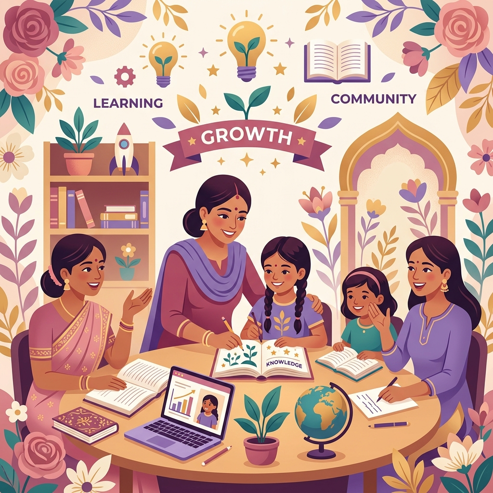

Her Strength.
Her Story.
Our Change.
Queens of Change Foundation is a government registered, all-women organization dedicated to empowering underprivileged young women, restoring dignity, and creating systemic opportunities across communities.

About Our Foundation
Queens Of Change Foundation is a Government registered organization, established under the Indian Society Act, 1860. We are an all-women organization dedicated to empowering women and restoring dignity, equality, and opportunity across communities.
For many women and girls, access to basic sanitary hygiene is a daily struggle, affecting their health, education, and self-confidence. We tackle this head-on: *we adopt slums and provide free sanitary pads every month*, while running scientific awareness workshops to challenge and break long-standing societal stigmas.
Beyond health, we support women through comprehensive education and skill development, helping them gain confidence, unlock their full potential, and achieve financial independence so they can uplift themselves and their families.
The 7-Year Success Journey
We don't believe in quick-fix aids. Our longitudinal program targets a 4-to-7 year developmental runway from early adolescence through the first college year.
Foundation & Health (Ages 11-12)
We intercept cycles early in middle school. Girls enter our regular distribution pipelines inside adopted slums and attend scientific seminars debunking myths, ensuring they continue school attendance during puberty.
Dignity & HygieneLeadership & Confidence (Ages 13-14)
Transitioning into high school, girls form regional leadership circles. They are mentored by professional women in speaking up, negotiating hygiene rights, and leading local peer support groups.
Peer LeadershipSkilling & Digital Literacy (Ages 15-16)
Addressing workforce readiness, we provide access to skilling clinics. Girls study digital literacy, introductory coding, business development, and target career entry points to break generational poverty.
Workforce ReadinessTransformation & University (Ages 17-18)
Providing access to scholarships and mentoring during their first completed year of college. Over 94% of our young women matriculate directly to a 4-year university as the first in their families to do so.
Higher EducationAdopted Slums & Outreach Map
We adopt urban and rural slums, establishing sanitary supply pipelines and local leadership circles. Click each zone to view our impact footprint.
Lucknow Slum Hub Impact
Our Collective Footprint
Real, measurable change driven by passionate advocates across the nation.
Free Sanitary Pads Distributed
Communities Supported
Lives Directly Impacted
Women-Led Organization
Core Pillars of Action
How we implement change across four complementary social dimensions.
Sanitary Pad Distribution
We adopt urban and rural slums to establish regular pad supply pipelines. We distribute high-quality, biodegradable sanitary napkins completely free of cost to local schoolgirls and women every month.
Scientific Health Education
We hold scientific, informative, and stigma-busting seminars on female biology, safe hygiene practices, and nutritional requirements. We empower girls to discuss menstruation openly and with pride rather than shame.
Women Empowerment
Beyond immediate aid, we build livelihood avenues. We guide girls into coding, digital literacy, and leadership mentoring programs to help them navigate career entry points and stand as self-sufficient guides.
Community Outreach
We collaborate with grassroots authorities, village leaders, and families. We understand that changing social behavior surrounding menstruation requires educating boys and men, transforming society completely.
Find Your Perfect Volunteer Match
We have opportunities matching every level of availability and background. Select your time commitment below to reveal your matched role.
Community Drive Champion
Become a boots-on-the-ground volunteer for our monthly sanitary pad distribution drives or help organize localized fundraising campaigns. Perfect for busy professionals who want to make a targeted, immediate difference.
Volunteer Recognition
We highly appreciate our changemakers. Type your name below to preview the official appreciation certificate you will earn after completing our outreach drives.
Earn Your Credentials
Every drive participant, mentor, and regional coordinator is officially certified by the Board of Directors, documenting social leadership and community impact hours.
Perfect for adding to your **LinkedIn Profile, Resume**, or academic scholarship files!
Certificate of Appreciation
This is proudly presented to
in recognition of their extraordinary dedication and invaluable voluntary service in our Menstrual Hygiene, Slum Outreach, and Women Skill Development campaigns, fostering sustainable change and dignity.
See Your Impact In Real-Time
Your donations directly fund sanitary pads and health workshops. Drag the slider below to see how a simple contribution makes a massive difference in a girl's life.
Impact Generated
Where Your Funds Go
We maintain a meticulous record of financial efficiency. Over 90% of all capital goes directly into slum supplies and direct education.
Direct Spending Footprint
Hover over each category on the chart or click the bars below to see exact operational descriptions of how resources are invested.
Stories of Change
Real testimonials from the girls and women whose futures were altered.